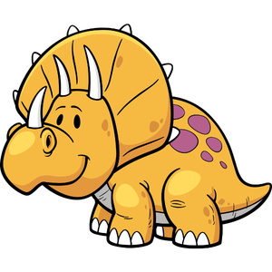
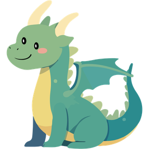
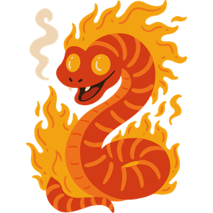
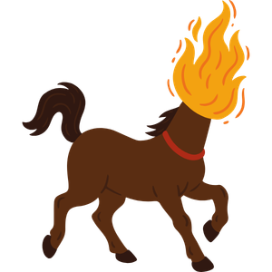
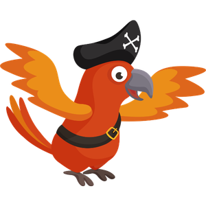
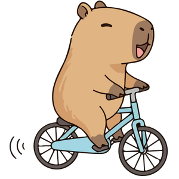

Animais e criaturas míticas · 6 artes
Mesmo padrão chibi da biblioteca. Comparação entre original e versão padronizada.
Dino Sinoceratops

Original Padronizado
PadronizadoDragão

Original Padronizado
PadronizadoBoitatá

Original Padronizado
PadronizadoMula sem Cabeça

Original Padronizado
PadronizadoPapagaio Pirata

Original Padronizado
PadronizadoCapivara de Bicicleta

Original Padronizado
Padronizado